iOS-app for sportrening
Brukermanual
Alt du trenger for å legge spor, gå spor og følge treningen over tid.
Sist oppdatert: 25. oktober 2026
01
Kom i gang
Trax er laget for hundeførere som trener spor. Du legger sporet med telefonen i lomma, markerer gjenstander underveis, og går sporet med hunden etterpå mens appen viser hvor sporleggeren gikk.
- Første gang du åpner appen, får du en kort introduksjon. Bla deg gjennom med «Fortsett».
- Trykk «Gi stedstilgang» og velg «Tillat ved bruk av appen».
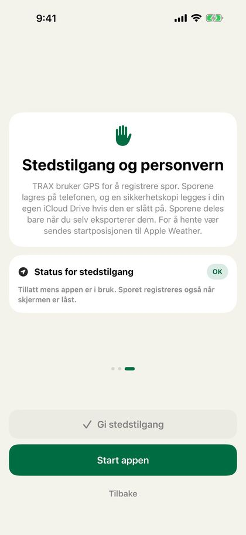
Tips: «Ved bruk av appen» er nok. Når du har trykket «Start», fortsetter sporingen også når skjermen er låst eller du bytter app, og iOS viser en blå markering øverst på skjermen. Du kan endre tilgangen under Innstillinger › Trax › Posisjon på iPhonen.
Trax trenger «Presis posisjon». Uten den kan posisjonen bomme med flere hundre meter. Er den slått av, ber appen om presis posisjon når du skal legge eller gå et spor, og viser kortet «Presis posisjon er av» med en lenke til Innstillinger. Slå på «Presis posisjon» for Trax der.
Trax og brukermanualen følger språket på telefonen: norsk bokmål, svensk, tysk eller engelsk. Vil du bruke et annet språk enn telefonen, velger du det under Innstillinger › Språk.
02
Hjem-skjermen
Herfra starter du alt, og her finner du alle sporene dine.
Den grønne toppen viser tallene for denne måneden: antall spor, hvor mange km sporene var til sammen og hvor stor del av gjenstandene som ble funnet. Ikonene øverst til høyre er Importer, Brukermanual og Innstillinger. «Importer» henter et spor fra en Trax- eller GPX-fil, for eksempel et spor noen har sendt deg.
- «Klare spor» er spor som er lagt, men som hunden ikke har gått ennå. De vises som store kartkort øverst, og har du flere, blar du sidelengs. Prikkene under viser hvor mange det er. Merkelappen på kortet viser status («Klart», «Klar om …» mens liggetiden telles ned, eller «Spor pågår» hvis sporet er startet, men ikke stoppet) og liggetiden, og en stripe viser hvor langt liggetiden har kommet. Kortet viser også lengden og antall gjenstander, og hunden sporet er lagt for, for eksempel «for Luna».
- «Start» på kortet tar deg rett til sporet. Trykk ellers på kortet for å åpne sporoversikten. Hold fingeren på kortet og velg «Slett» for å slette sporet.
- «Siste spor» viser de tre siste fullførte sporene. Hver rad har et lite kart med sportypen som merke, dato, lengde og hund på én linje, og funnene til høyre, for eksempel 3/3. Det lille kartet viser ruten din i samme farger som i sporoversikten: grønn, oransje eller rød etter hvor langt fra sporet den gikk (se «Avvik fra sporet»). Trykk på et spor for å se detaljene.
- Sveip et spor mot venstre for å slette det. «Se alle» ved «Siste spor» åpner siden «Fullførte spor» med alle sporene dine.
- «Nytt spor» er den grønne knappen nederst, og starter sporlegging.
- Finnes det en nyere versjon av Trax i App Store, vises kortet «Ny versjon av Trax» under toppen. «Oppdater» åpner Trax i App Store, og krysset skjuler meldingen til neste versjon kommer. Appen sjekker høyst én gang i døgnet, og bare når du er på hjem-skjermen.
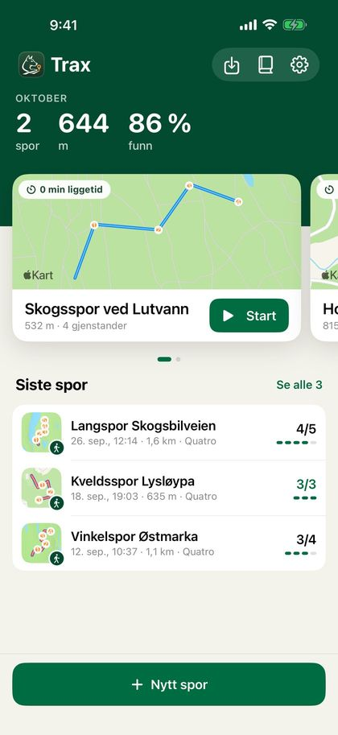
På siden «Fullførte spor» er sporene gruppert per måned. Øverst til høyre finner du dokumentknappen for PDF per hund. Sveip et spor mot venstre for å slette det.
- Har du registrert hunder, vises knapper øverst: «Alle» og én for hver hund, med hundens forbokstav i farge. Spor uten hund ligger under «Alle». Velger du en hund, ser du bare sporene dens og et sammendrag med antall spor, hvor stor del av gjenstandene som er funnet, antall spor de siste 30 dagene og «På sporet», og en graf over utviklingen (se «Hunder»). Har hunden ingen fullførte spor, står det «… har ingen fullførte spor ennå».
- Hunder du har slettet, beholder knappen sin så lenge de har spor. Vil du skjule en slik hund, holder du fingeren på knappen og velger «Skjul fra filteret». Under Innstillinger › Mine hunder › «Tidligere hunder» kan du vise den igjen.
- Har sporene på siden minst to sportyper, kommer det knapper for sportype under sammendraget: «Spor», «IGP-spor», «Blodspor», «Feltsøk» og «Arealsøk». Finnes det minst to typer spor (spor, IGP-spor eller blodspor), kommer også «Alle spor» først. Den viser bare spor. Feltsøk og arealsøk er egne øvelser, og vises bare under sine egne knapper, med egen statistikk (se «Søk: feltsøk og arealsøk»).
- Små ikoner på raden viser om sporet er importert (pil inn) og om du har eksportert det (pil ut).
03
Legge spor
Som sporlegger går du sporet først, mens appen registrerer ruten med GPS.
- Trykk «Nytt spor» på hjem-skjermen.
- Velg øvelse med de store knappene: «Spor», «IGP-spor», «Blodspor» eller «Søk». «Spor» er valgt fra før (se «Sportype og blodspor» og «Søk: feltsøk og arealsøk»).
- GPS-en starter så snart skjermen åpnes. Vent til GPS-prikken øverst er grønn eller gul, og trykk den store grønne «Start»-knappen.
- Gå sporet. Ruten tegnes på kartet mens du går.
- Trykk «Gjenstand» for å legge ut en gjenstand der du står (se «Gjenstander»).
- Trenger du en pause, trykker du «Pause». Trykk «Fortsett» for å gå videre. Strekningen mens sporet er pauset, blir ikke registrert.
- Hold inne «Stopp» når sporet er ferdig lagt. Knappen fylles mens du holder, og sporet stoppes når den er full. Da stopper du ikke sporet ved et uhell.
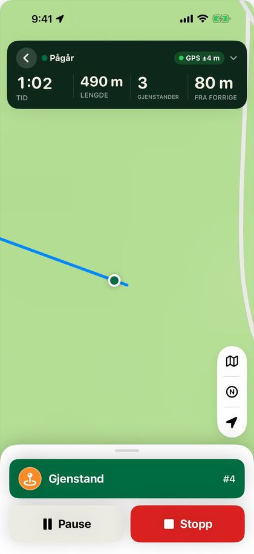
Er GPS-signalet svakt før du starter, vises en boks under feltet øverst. Rød betyr at du bør vente på bedre signal, gul at du kan starte, men at sporet blir mer nøyaktig om du venter. Boksen lukkes av seg selv når signalet blir godt, eller når du trykker «OK, forstått». Du kan alltid starte.
Feltet øverst viser tid, lengde og antall gjenstander med store tall, hvor nøyaktig GPS-en er, og batterinivået. Grønn prikk betyr under 10 meter, gul 10–25 meter og rød over 25 meter. Står det «Ingen GPS», har telefonen ikke fått posisjon på over 15 sekunder. Når du har lagt ut en gjenstand, viser feltet også «Fra forrige»: hvor mange meter du har gått siden forrige gjenstand. Trykk på feltet for å se når sporet startet, når posisjonen sist ble oppdatert, koordinaten du står på og når forrige gjenstand ble lagt.
Når du trykker «Start», zoomer kartet inn på deg, alltid med samme utsnitt. Zoomer du under sporet, beholdes zoomen du valgte.
Kartknappene på høyre side er samlet i én kapsel. Den øverste knappen åpner kartmenyen, der du velger «Kart», «Topo» eller «Satellitt», og slår «Nattmodus» av eller på (se «Nattmodus»). Topo er Kartverkets topografiske kart med høydekurver og stier. Det krever nett og viser «© Kartverket» nederst, og finnes bare i Norge. N-knappen bytter kartretning: nord opp, eller et kart som snur seg etter retningen du står. Valget huskes, og kan også endres under Innstillinger › Kart og spor. Kartet følger posisjonsprikken din. Drar du i kartet, for eksempel for å flytte hjørnene på et felt, slutter kartet å følge deg og blir stående der du la det. Zoomer du eller vrir på kartet, følger det deg fortsatt. Den nederste knappen viser en tom pil når kartet ikke følger deg. Trykk på den, så sentreres kartet på deg igjen og følger deg videre, med samme zoom.
Pila over kartknappene viser vinden (se «Vær»).
Mens du legger sporet, vises det på låseskjermen og i Dynamic Island med tid, lengde og antall gjenstander. På låseskjermen kan du trykke «Pause» eller «Fortsett», og «Gjenstand» for å legge ut en gjenstand uten å låse opp telefonen.
Viktig: Trykker du på tilbakepila øverst til venstre i feltet før sporet er stoppet, spør appen om du vil forkaste sporet eller stoppe og lagre det. Et forkastet spor kan ikke hentes tilbake.
04
Sportype og blodspor
Velg om sporet er et vanlig spor, et IGP-spor eller et blodspor. Blodspor har egne knapper og egne valg. Feltsøk og arealsøk ligger under «Søk» (se «Søk: feltsøk og arealsøk»).
Sportypen velges med de store knappene under «Velg øvelse før du starter» på «Legg spor», før du trykker «Start». Den kan endres etterpå i kortet «Sportype» i sporoversikten. Sportypen står på sporet, i PDF-en og i filen når du sender sporet.
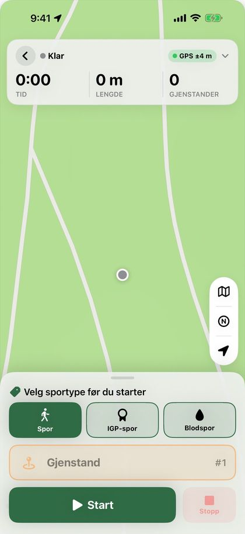
På blodspor er «Gjenstand» byttet ut med tre knapper:
- «Sårleie» legger ut et sårleie der du står. Det vises som en mørk rød dråpe på kartet.
- «Blodstopp» markerer at det ikke er blod herfra. Knappen heter «Blod igjen» så lenge blodstoppen varer. Trykk den der blodet starter igjen. Blodstoppen vises som en stiplet hvit strek oppå sporet.
- «Vilt» markerer hvor viltet ligger, med et brunt målflagg på kartet.
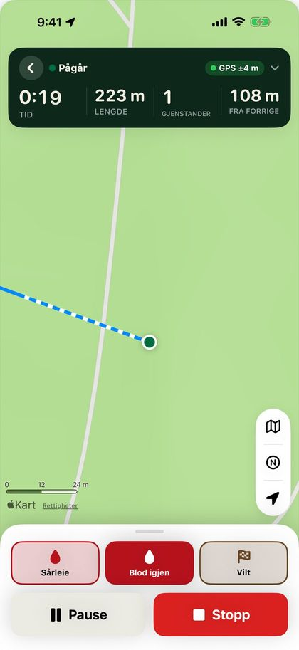
Der blodsporet starter, vises «Skuddplass» med en pil for fluktretningen. Etter «Stopp», og senere i sporoversikten, velger du «Fluktretning»: «Automatisk» (ut fra de første 15 meterne av sporet), en kompassretning eller «Ingen pil». Slå av «Vis fluktretning for fører» når fluktretningen ikke skal være merket, for eksempel på EK. Skuddplassen og pila vises også når sporet går blindt.
I kortet «Blod og sporsko» skriver du blodmengden i dl (valgfritt) og slår «Sporsko/klauv» av eller på. Under feltet ser du blod per 100 meter spor. Mindre blod per 100 meter gir et vanskeligere spor. Sist valgte verdier foreslås neste gang.
Blodspor har egne valg for liggetid, fra 30 minutter til 24 timer (se «Liggetid»).
Når blodsporet gås, telles sårleie og vilt som gjenstander. Varselet sier «Nær sårleie» eller «Nær vilt», og funnet registreres som «Sårleie registrert som funnet». Før en blodstopp og før blodet starter igjen varsler appen med «Blodstopp» og «Blod igjen» (se «Varsler og talevarsler»).
Sporoversikten og PDF-en viser «Sårleie, vilt og blodstopp» med lengden på hver blodstopp, og blodmengde og sporsko. Blodmengden er også med i hunderapporten og på bildet til sosiale medier.
IGP-spor: Etter «Stopp», og senere i sporoversikten, har IGP-spor kortet «IGP-trening» med fire valgfrie felt: «Mat» (i hvert fotspor, i annethvert fotspor, spredt, bare i enden eller ingen mat), «Startfelt» (flagg eller tråkket startfelt), «Vinkler» (lagt naturlig eller tråkket) og «Sporlegger» (eget eller fremmed spor). Sist valgte foreslås neste gang. Feltene står i PDF-en og følger med når du sender sporet. Utviklingsgrafen for hunden har valget «Mat» under «Mer», så du ser nedtrappingen av maten over tid.
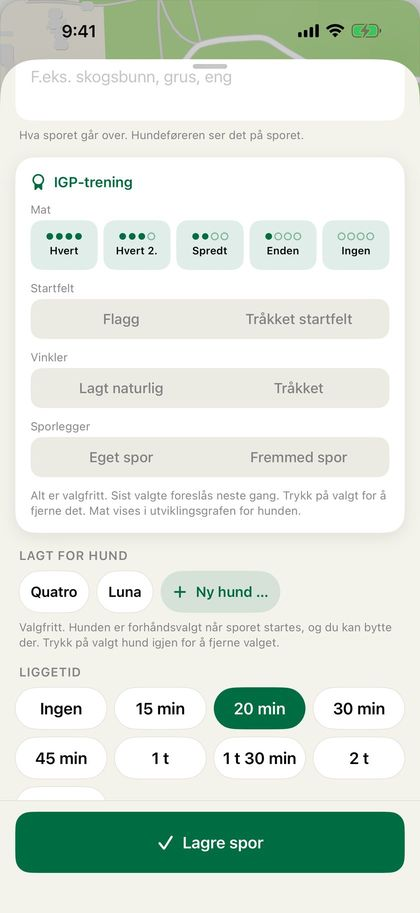
IGP-nivå: Når du velger «IGP-spor» før start, velger du også nivå: «Fritt» (ingen krav), IGP-V, IGP 1, IGP 2, IGP 3, FH 1, FH 2 eller FH 3. Kravene til nivået står under knappene. Mens sporet legges, viser panelet øverst «Skritt» (f.eks. 212/300), gjenstandene og antall skritt siden siste vinkel på langsiden du er på («Langside 2»). Lengden i meter ser du når du trykker på panelet. Kommer en vinkel før det er 50 skritt siden forrige vinkel, eller ligger en gjenstand nærmere enn 20 skritt fra en vinkel, får du et varsel øverst på kartet. Vinklene finnes fra GPS-en og registreres først 5–20 meter etter vinkelen, så varselet kommer litt på etterskudd. Etter «Stopp» settes liggetiden til minst kravet for nivået. I sporoversikten viser kortet «IGP-krav» en grønn og rød sjekkliste: lengde, vinkler, avstand mellom vinklene, gjenstander, gjenstander unna vinkler, kryss-spor (FH 2 og FH 3), liggetid og arbeidstid. Liggetid og arbeidstid sjekkes når sporingen er ferdig. Nivået kan byttes i kortet, og står i PDF-en. Skritt regnes om fra meter med skrittlengden under Innstillinger › Kart og spor › «Skrittlengde» (standard 0,75 m). Varslene kan slås av under Innstillinger › Varsler › «IGP-krav» (under «Mens sporet legges»).
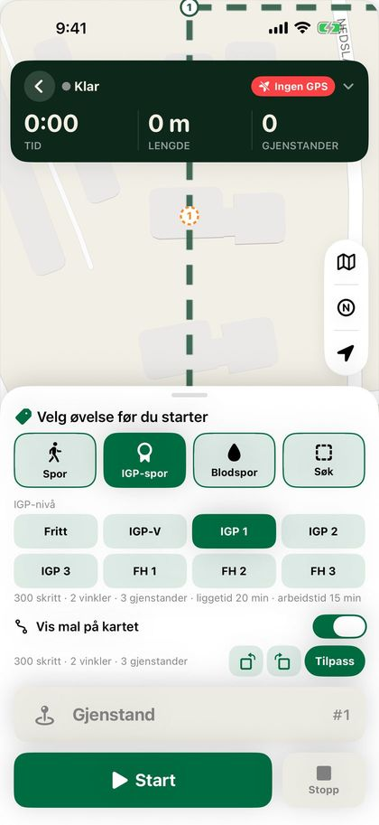
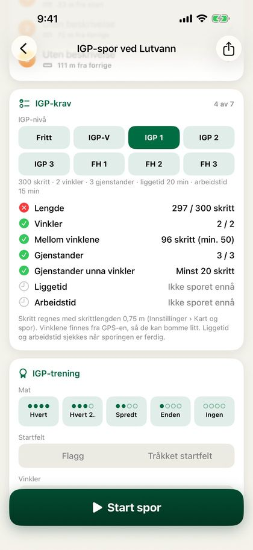
IGP-mal: Slå på «Vis mal på kartet» under nivåknappene, så legges en mal for nivået på kartet der du står, så snart GPS-en har funnet deg. Malen viser langsidene, vinklene og hvor gjenstandene skal ligge, og peker mot nord. Snu den med knappene for venstre og høyre, eller hold og dra i ↻ på kartet. Bytter du nivå, får du en ny mal for nivået på samme sted. Når du trykker «Start», flyttes malen dit du står.
«Tilpass» åpner arket «Tilpass malen». Der endrer du lengden på hver langside i skritt, og om hver vinkel går til venstre eller høyre. Arket viser hvor mange skritt malen er til sammen, og sier fra hvis den blir kortere enn kravet til nivået. Gjenstandene ligger midt på langsidene og den siste i enden, minst 20 skritt fra vinklene, og flytter seg med når du endrer langsidene. «Tilbakestill» gir deg malen for nivået igjen.
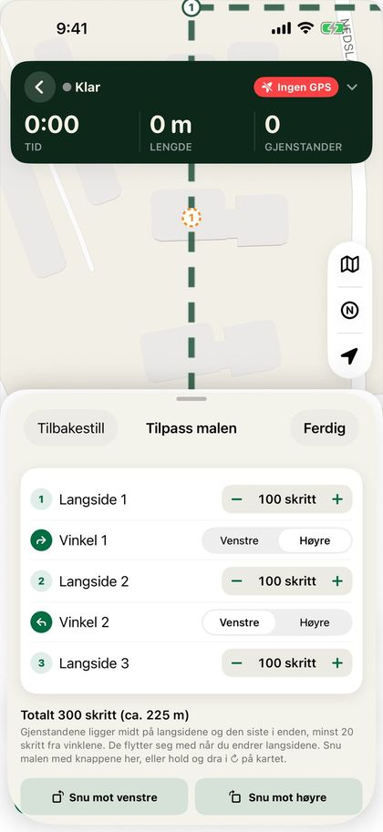
Mens du legger sporet, viser kortet øverst på kartet hva som kommer, for eksempel «Vinkel til høyre om ca. 20 skritt» eller «Legg gjenstand 2 nå», og hvor langt du har kommet på langsiden, for eksempel «Langside 2 · 40 av 100 skritt». Før vinkler og gjenstander kjenner du et lite dunk, og med «Les opp varsler» på blir beskjeden lest opp. Dunket og opplesningen slår du av under Innstillinger › Varsler › «Veiledning fra IGP-malen». Kortet vises uansett.
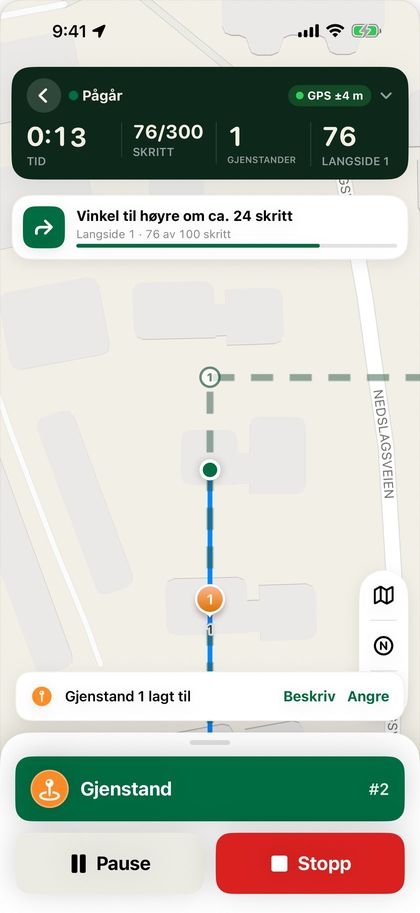
Tips: Malen er en rettesnor, ikke en fasit. Skrittene regnes fra lengden GPS-en måler, delt på skrittlengden din, og GPS-en kan bomme med noen meter. Gå etter terrenget og skrittene dine.
05
Søk: feltsøk og arealsøk
Søk er egne øvelser, ikke spor. Du legger et felt eller en teig på kartet og legger ut gjenstander eller figuranter, og hunden søker innenfor en tidsgrense.
- Trykk «Nytt spor» og så «Søk». Velg «Feltsøk» eller «Arealsøk». Valget står da på «Søk»-knappens plass, og du kan trykke der igjen for å bytte.
- Feltet (eller teigen) legges på kartet der du står, med startlinjen der du er. Er været hentet, snus det så hunden sendes inn mot vinden. Ellers vender det mot nord.
- Velg størrelse i menyen til venstre: feltsøk har «Felt 50 × 50 m» og «Korridor 10 × 50 m», arealsøk har «Teig 100 × 100 m» og «Teig 100 × 200 m». Du kan også velge bredde og lengde selv.
- Velg tidsgrense i menyen til høyre. Standard er 15 minutter for feltsøk og 1 time for arealsøk. Valgene huskes hver for seg for feltsøk og arealsøk.
- Juster plasseringen med knappene under: «Snu venstre» og «Snu høyre» snur feltet litt om gangen, «Mot vinden» snur det mot vinden, og «Start her» flytter startlinjen dit du står.
- Trykk «Start» når feltet ligger riktig. Knappene for størrelse, tid og plassering forsvinner da.
- Gå inn i feltet og trykk «Gjenstand» der hver gjenstand legges. I arealsøk har du også knappen «Figurant» for å legge ut en figurant der du står.
- Trykk «Stopp» og lagre som vanlig.
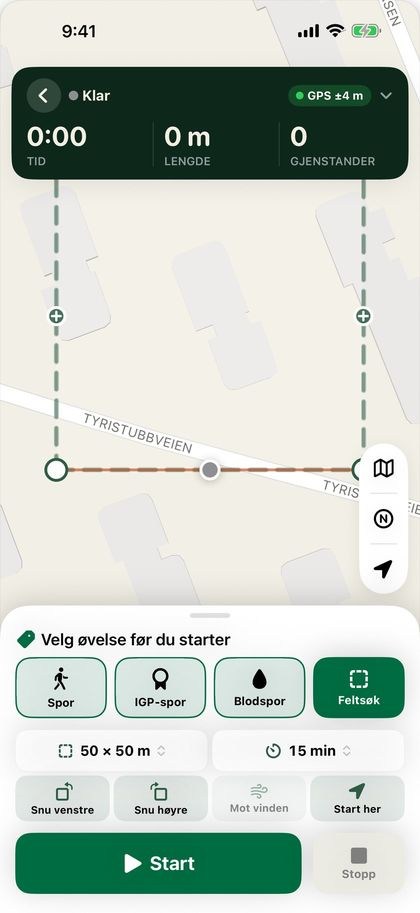
Feltet trenger ikke være firkantet. Hold og dra i hjørnene for å flytte dem, og dra i + på midten av en kant for å lage et nytt hjørne. Da står det «Egen form» i størrelsesmenyen, og «Tilbake til firkant» i samme meny angrer. Formen kan endres helt til du trykker «Stopp».
Når hunden skal søke, åpner du søket fra «Klare spor» og trykker «Start». «Gå blindt» er slått på fra før, siden føreren vanligvis ikke vet hvor gjenstandene ligger (se «Blindt spor»). Feltet øverst viser tid igjen, tid brukt og antall funn. Telefonen varsler ett minutt før tiden er ute og når tiden er ute, med vibrasjon, og med tale hvis «Les opp varsler» er på. Når tiden er ute, står det «Over tiden», og tiden teller videre.
Trykk «Funnet» når hunden kommer med en gjenstand eller markerer en figurant. Appen spør hvilken gjenstand hunden fant, og tiden fra søket startet lagres med funnet. Avstanden din spiller ingen rolle, siden du som regel står ved feltet mens hunden søker.
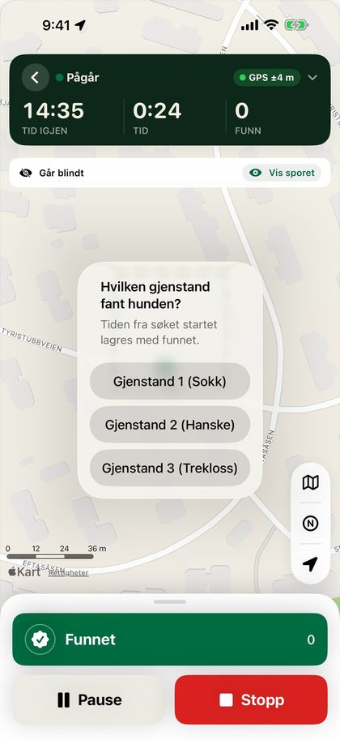
Søk har ingen sporvarsler, avviksanalyse eller vinkler. På kartet er utleggerens rute tynn og dempet, og i feltsøk vises ikke førerens rute.
Resultatet i sporoversikten viser feltets størrelse, tidsgrensen, tiden brukt og hvert funn med tiden det tok, i den rekkefølgen hunden fant dem. I arealsøk telles figuranter og gjenstander hver for seg. Gjenstander som ikke ble funnet, står under.
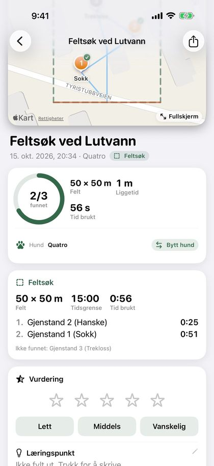
Tips: Feltsøk, arealsøk og spor holdes alltid hver for seg i statistikken. «Alle spor» på siden «Fullførte spor» viser bare spor, og hundekortet for søk viser «Antall» i stedet for «Spor», uten «På sporet».
06
Gjenstander
- Stå der gjenstanden legges, og trykk «Gjenstand». Gjenstanden lagres med en gang, med nummer og posisjon.
- Vil du skrive en beskrivelse, for eksempel «sokk» eller «trekloss», trykker du «Beskriv» i meldingen som dukker opp.
- Trykket ved en feil? Trykk «Angre» i meldingen.
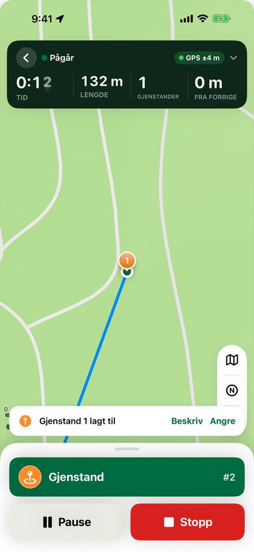
Gjenstandene nummereres i den rekkefølgen du legger dem ut. Beskrivelsen kan også skrives eller endres senere i sporoversikten, under «Gjenstander».
Farge og ikon for gjenstandene velger du under Innstillinger › Kart og spor. Valget gjelder alle kart, også i PDF-en og på bildet til sosiale medier.
Tips: Har telefonen ikke funnet posisjonen din ennå, lagres ikke gjenstanden. Vent noen sekunder til sporet begynner å tegnes, og prøv igjen.
07
Lagre sporet
Når du trykker «Stopp», får du opp arket «Lagre spor». Øverst ser du lengden, antall gjenstander og tiden.
- «Lagre spor» står fast nederst i arket. Den lagrer sporet og tar deg tilbake til hjem-skjermen, der sporet ligger under «Klare spor».
- «Eksporter» lar deg velge Trax-fil, GPX eller PDF. Velg «Til en annen Trax-bruker» for å sende sporet til hundeføreren, eller «Til en annen Trax-bruker, blindt» hvis hundeføreren ikke skal se sporet (se «Dele og motta spor»). Når du er ferdig med å eksportere, kommer du tilbake til arket med alt du har fylt inn, og trykker «Lagre spor».
- «Fortsett sporet» tar deg tilbake til kartet hvis du trykket «Stopp» for tidlig.
Du kan gi sporet et navn. Lar du feltet stå tomt, får sporet et navn med dato og klokkeslett.
Under «Underlag» kan du skrive hva sporet går over, for eksempel skogsbunn, grus eller eng. Hundeføreren ser underlaget på sporet, også når du sender det til en annen telefon.
Under «Liggetid» trykker du på knappen for hvor lenge sporet skal ligge før hunden går det (se «Liggetid»). På blodspor kommer også kortene «Skuddplass» og «Blod og sporsko» (se «Sportype og blodspor»).
Under «Lagt for hund» kan du velge hvilken hund sporet er lagt for. Det er valgfritt, og «Ingen hund» er standard. Hundene står som knapper, og valgt hund er grønn. Trykk på valgt hund igjen for å fjerne valget, eller på «Ny hund …» for å legge til en hund. Hunden står på kortet under «Klare spor» og som merket «For …» i sporoversikten, der du også kan endre den. Når sporet startes, er hunden valgt på forhånd, men du kan bytte. Hunden følger med når du sender sporet som Trax-fil, og kobles til hunden med samme navn hos mottakeren.
Under «Treningsmomenter» velger du hva sporet skal trene på (se «Treningsmomenter»).
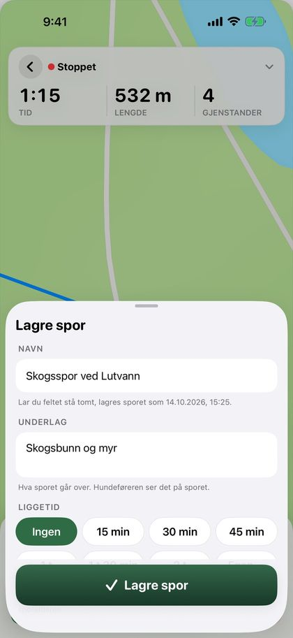
08
Liggetid
Liggetid er tiden fra du startet å legge sporet, til hundeføreren starter å gå det. Den telles opp av seg selv og vises både mens sporet venter og mens det gås. Når sporet er gått, låses liggetiden og lagres sammen med sporet.
Vil du ha beskjed når sporet har ligget lenge nok, velger du liggetid med knappene i arket «Lagre spor»: «Ingen», 15, 30, 45, 60 eller 90 minutter, 2 timer, eller «Egen …» med timer og minutter (høyst 48 timer). Sist valgte liggetid huskes. På blodspor er valgene 30 minutter og 1, 2, 3, 6, 12, 18 og 24 timer, og blodspor husker sitt eget valg.
Første gang spør telefonen om Trax kan sende varsler. Fem minutter før liggetiden er ute får du varselet «Sporet «…» er klart om 5 min (liggetid 30 min). Gjør klar hunden.» Låseskjermen og Dynamic Island teller ned, og viser «Sporet er klart» med sporalderen til sporet startes. Trykk på varselet eller nedtellingen for å åpne sporet.
Liggetid over 8 timer får ingen nedtelling på låseskjermen, bare varselet før sporet er klart.
For spor som venter, viser sporoversikten liggetiden stort, med målet og hvor langt den har kommet. Trykk på kortet for å endre liggetiden eller velge «Ingen». Varselet og nedtellingen forsvinner når sporet startes eller slettes.
Tips: Varselet er tidssensitivt og kommer gjennom Fokus, for eksempel Søvn, når «Tidssensitive varslinger» er på for Trax. Har du slått av varsler for Trax, sier kortet fra, med en knapp til Innstillinger.
09
Kryss-spor
Et kryss-spor er et ferskere spor som krysser hovedsporet, for å trene hunden i å holde seg på riktig spor.
- Legg hovedsporet som vanlig, og lagre det.
- Åpne sporet fra «Klare spor» på hjem-skjermen, og trykk «Legg kryss-spor» i kortet «Kryss-spor».
- Hovedsporet vises svakt på kartet. Trykk «Start» og gå på tvers av hovedsporet. «Pause» og «Stopp» virker som når du legger et vanlig spor, men kryss-spor har ingen gjenstander.
- Trykk «Stopp». Skriv gjerne hvem som la kryss-sporet under «Lagt av», og trykk «Lagre kryss-spor».
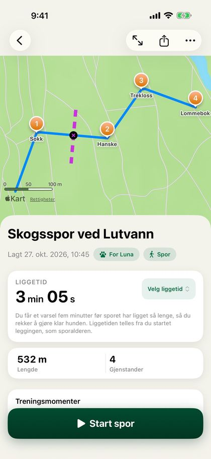
Kryss-spor vises stiplet i en egen farge, med et lite kryssmerke der de krysser hovedsporet. Kortet viser lengden og kryss-sporets egen liggetid. Du kan legge flere kryss-spor, og slette et kryss-spor med søppelbøtta før sporet gås. Kryss-spor finnes ikke i feltsøk og arealsøk.
Når hunden går sporet, varsler appen 12 meter før hvert kryss med «Kryssende spor» (se «Varsler og talevarsler»). Kryss-sporene vises også i avspillingen, i PDF-en og på bildet til sosiale medier, og følger med når du sender sporet. På blindt spor er de skjult til sporet stoppes.
10
Gå spor
Som hundefører går du sporet med hunden. Sporleggerens rute og gjenstandene vises på kartet, og din egen rute tegnes i en annen farge.
- Trykk «Start» på sporet under «Klare spor» på hjem-skjermen. Du kan også åpne sporet og trykke «Start spor» nederst.
- Velg hunden som skal gå sporet. Hundene står som knapper, og valgt hund er grønn. Er sporet lagt for en hund, eller har du bare én hund, er den valgt allerede. «Ny hund …» sist legger til en ny hund og velger den med en gang. Har du ikke registrert hunder, kan du starte uten hund.
- Vil du gå uten å se sporet, slår du på «Gå blindt» (se «Blindt spor»).
- Trykk «Start».
- Følg hunden. Bruk «Pause» og «Fortsett» ved behov.
- Trykk «Funnet» når hunden markerer en gjenstand.
- Hold inne «Stopp» når sporet er gått.
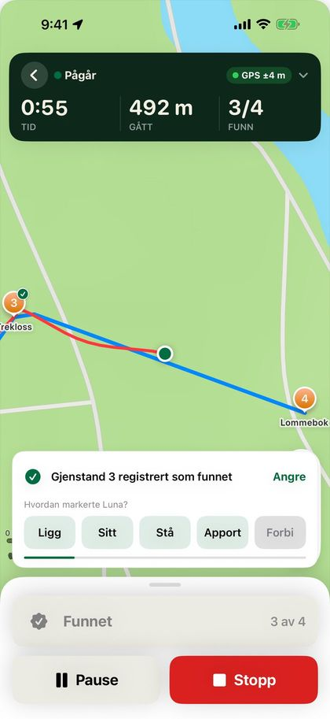
Før du starter, viser feltet øverst hvor gammelt sporet er, hvor langt det er og hvor mange gjenstander det har. Under sporet viser det tid, hvor langt du har gått og hvor mange gjenstander som er funnet. Liggetiden ser du ved å trykke på feltet. Er GPS-signalet svakt, vises samme boks som når du legger spor.
Når du trykker «Start», zoomer kartet inn på deg med samme utsnitt hver gang. Kartet følger deg mens du går, og zoomer du inn eller ut, beholder kartet zoomen du valgte. Kartmenyen øverst i kartknappene har vanlig kart, topo (bare i Norge), satellitt og nattmodus, og N-knappen bytter mellom nord opp og et kart som snur seg etter retningen din. Pila over kartknappene viser vinden da hunden startet sporet.
Kommer du for langt fra det lagte sporet, vibrerer telefonen og kortet «Sportap» vises øverst med hvor langt unna du er. Kortet forsvinner når du er tilbake på sporet, eller når du trykker på krysset. Les mer om dette og de andre varslene i «Varsler og talevarsler».
Opptaket fortsetter når skjermen er låst eller du bytter app. Sporet vises på låseskjermen og i Dynamic Island, og på låseskjermen kan du trykke «Pause», «Fortsett» og «Funnet».
Trykker du på tilbakepila etter at du har startet, kommer spørsmålet «Avslutte hundesporet?». Du kan stoppe og lagre, sette sporet på pause eller velge «Forkast hundespor». Står sporet på pause, fortsetter du det ved å åpne sporet igjen. «Forkast hundespor» sletter bare det du har gått. Sporet sporleggeren la, blir liggende under «Klare spor».
Stopper appen midt i et spor, for eksempel fordi telefonen gikk tom for strøm, er sporet lagret underveis. Det står under «Klare spor» med «Spor pågår». Åpne sporet og trykk «Fortsett», så fortsetter sporet fra pause. Tiden appen var stoppet, regnes ikke med i tiden brukt.
11
Blindt spor
Gå sporet uten å se hvor sporleggeren gikk, slik du gjør på prøve.
Slå på «Gå blindt» før du trykker «Start». Bryteren er av når du åpner sporet, så du må slå den på hver gang. Er sporet sendt til deg blindt, er den på fra før (se «Dele og motta spor»).
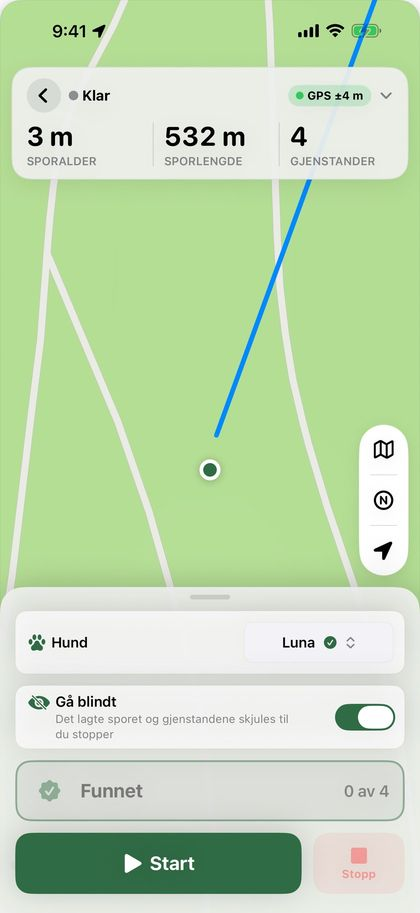
- Det lagte sporet, gjenstandene, blodstoppene, kryss-sporene og vinklene er skjult på kartet til du trykker «Stopp». Startstedet vises som en grønn dråpe med oransje pote, og skuddplassen og fluktretningen på blodspor vises likevel.
- Du får ingen varsler underveis, verken om gjenstander, blodstopp, sportap eller kryssende spor, og gjenstander leses ikke opp.
- Feltet øverst viser bare hvor mange gjenstander som er funnet, ikke hvor mange det er.
- «Funnet» registrerer nærmeste gjenstand, uansett hvor langt unna den er.
Trenger du å se sporet, for eksempel fordi dere har gått dere bort, trykker du «Vis sporet». Da vises alt, og sporet regnes ikke lenger som blindt.
Sporoversikten og PDF-en viser «Gått blindt», og når sporet ble vist hvis du trykket «Vis sporet».
12
Nattmodus
Trener du i mørket, gjør nattmodus skjermen mørk og rød, så nattsynet ditt ikke ødelegges.
- Trykk på den øverste kartknappen på høyre side av kartet, mens du legger spor eller sporer.
- Slå på «Nattmodus» i menyen.
- Slå den av på samme måte.
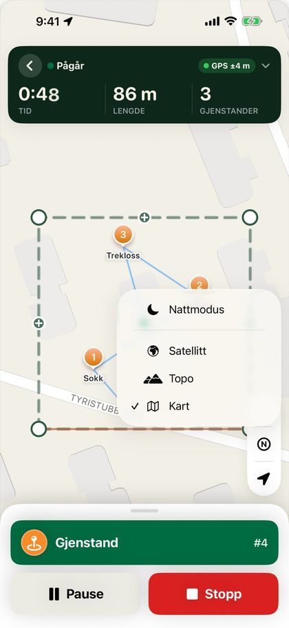
Nattmodus gjør hele skjermen rød og mørk: kartet, feltet øverst og knappene. Sporet, posisjonsprikken og knappene vises i lyst rødt, så de synes godt. Valget huskes til neste gang du legger spor eller sporer. Resten av appen ser ut som vanlig.
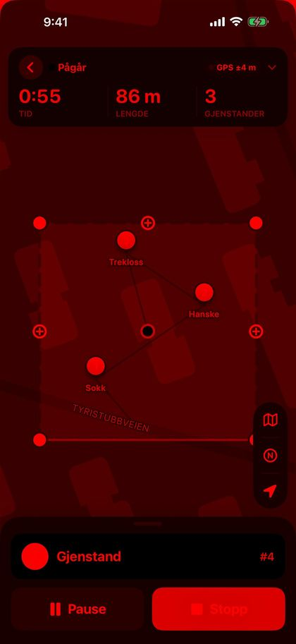
Tips: Skru gjerne ned lysstyrken på telefonen i tillegg. Nattmodus endrer fargene, ikke hvor sterkt skjermen lyser.
13
Registrere funn
Når du kommer innenfor valgt avstand av en gjenstand (12 meter som standard), vises et banner med nummer, beskrivelse og avstand. Telefonen vibrerer, også med låst skjerm. Er GPS-en unøyaktig, venter appen med varselet til posisjonen er bedre. Avstanden og varseltypen velger du under Innstillinger › Varsler (se «Varsler og talevarsler»).
- Trykk «Merk som funnet» i banneret, eller den store «Funnet»-knappen nederst. Velg «Senere» hvis du vil vente.
- Trykker du ikke på noe, lukkes banneret av seg selv når du har gått et stykke forbi (25 meter, eller dobbelt valgt avstand hvis det er lengre), eller når du nærmer deg neste gjenstand. Gjenstanden registreres da ikke som funnet, men du kan krysse den av når du stopper.
- «Funnet» kan bare trykkes når du er innenfor valgt avstand av en gjenstand som ikke er funnet ennå, både i appen og på låseskjermen. Vises ikke banneret, registreres den nærmeste.
- Trykket feil? Trykk «Angre» i meldingen som dukker opp nederst.
Vil du at funnene skal registreres av seg selv, slår du på «Registrer funn automatisk» under Innstillinger › Kart og spor › Funn. Gjenstanden registreres da som funnet når du har vært innenfor «Avstand til gjenstand» (3, 5, 8 eller 12 meter, 5 meter som standard) med godt GPS-signal. Telefonen vibrerer, og du kan trykke «Angre» med en gang. Når du stopper, kan du rette opp funnet og ikke funnet. Dette gjelder ikke blindt spor og søk.
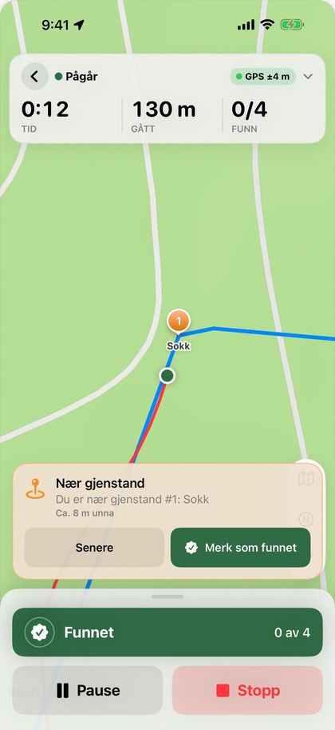
Når du stopper, kommer arket «Sporet er ferdig» med en oversikt over gjenstandene. Funn du registrerte underveis, er allerede krysset av. Rett opp hvis noe mangler.
Markering: På spor og IGP-spor kommer det fem valgknapper i meldingen etter «Funnet»: «Ligg», «Sitt», «Stå», «Apport» og «Forbi» (hunden gikk forbi, og du viste den gjenstanden). Trykk på den som passer, eller la være. Meldingen står i ca. 10 sekunder. Funn fra låseskjermen og funn som er registrert automatisk, kan du gi markering når du stopper. I sporoversikten står markeringen etter «Funnet» på hver gjenstand, med en oppsummering øverst i kortet. Trykk på en gjenstand for å endre den. Markeringen står også i PDF-en, og utviklingsgrafen for hunden har valget «Markering» under «Mer», med én stolpe per spor.
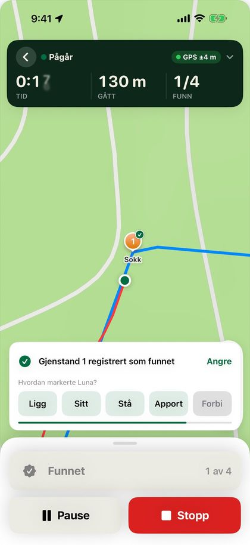
Falsk markering: På IGP-spor er det en egen knapp, «Falsk markering», ved siden av «Funnet». Trykk på den når hunden markerer der det ikke ligger noe. Tid og posisjon lagres, og et rødt merke vises på kartet. Trykket feil? Trykk «Angre» i meldingen, eller «Fjern» når du stopper. Falske markeringer står i sporoversikten, i PDF-en og som røde tall i grafen «Markering».
I samme ark kan du gi sporet en vurdering (se «Vurdering og vinkler»). I læringspunktet skriver du det du vil huske fra sporet, for eksempel hva som gikk bra eller hva som må jobbes mer med. Det kommer med i PDF-en. Fylte ikke sporleggeren ut underlaget, kan du skrive det her. Trykk «Lagre» når du er ferdig.
«Eksporter» i samme ark deler sporet som Trax-fil, GPX eller PDF med en gang. Etterpå kommer du tilbake til arket med alt du har fylt inn. Vil du vise fram sporet, trykker du «Del på sosiale medier» (se «Del på sosiale medier»).
Tips: Vil du gå sporet uten varsler og uten å se det, slår du på «Gå blindt» før start (se «Blindt spor»).
14
Varsler og talevarsler
Mens hunden går sporet, kan telefonen varsle deg med vibrasjon, lyd og tale. Alle varslene stilles inn under Innstillinger › Varsler.
- «Gjenstand i nærheten»: når du er innenfor «Avstand til gjenstand» (5–50 meter, 12 meter som standard). På blodspor gjelder det sårleie og vilt.
- «Blodstopp» og «Blod igjen» (gjelder blodspor): før du kommer til en blodstopp, og før blodet starter igjen etter den. Avstanden velger du under «Avstand til blodstopp» (20 meter som standard).
- «Sportap»: når du har vært lenger fra det lagte sporet enn «Avstand fra sporet» et stykke (5–30 meter, 15 meter som standard). Appen varsler ikke før du har vært på sporet én gang.
- «Kryssende spor»: 12 meter før hvert sted der et kryss-spor krysser sporet. Kryss som ligger tett, gir ett varsel.
- «IGP-krav» (mens sporet legges): når en vinkel kommer før 50 skritt etter forrige vinkel, eller en gjenstand legges nærmere enn 20 skritt fra en vinkel. Gjelder IGP-spor med valgt nivå (se «Sportype og blodspor»).
- «Veiledning fra IGP-malen» (mens sporet legges): et lite dunk før vinkler og gjenstander når du legger sporet etter en mal, og opplesning når «Les opp varsler» er på.
Alle disse er på som standard. Hovedbryteren «Varsler» øverst slår alle varsler av og på, også talevarslene. Varslene kommer også på låseskjermen. På blindt spor kommer ingen varsler. Endringer i blodstopp, sportap og kryssende spor gjelder fra neste gang du starter et spor.
Siden er delt i fire grupper: «Mens hunden sporer» (gjenstand i nærheten, sportap og kryssende spor), «Blodspor» (blodstopp og blod igjen), «Mens sporet legges» (IGP-krav) og «Lyd og tale» (varseltype og opplesning av lengden).
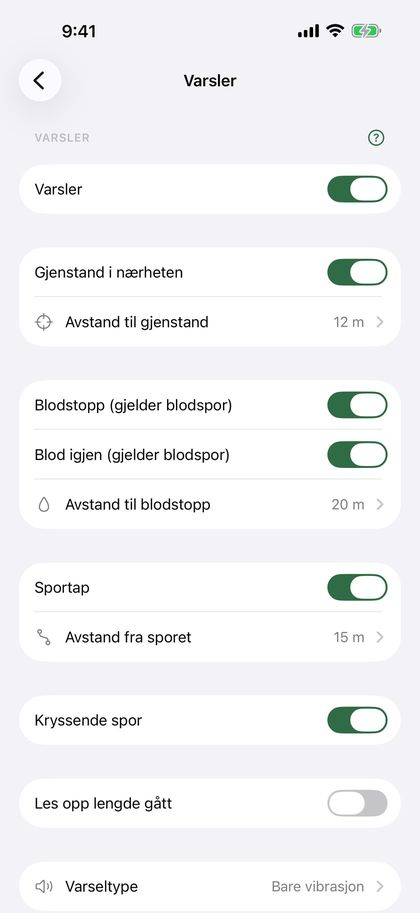
Under «Varseltype» velger du «Bare vibrasjon» eller «Vibrasjon og lyd». Lyden høres bare når telefonen ikke står på lydløs eller i «Ikke forstyrr».
Talevarsler: slå på «Les opp varsler» under «Varseltype». Da leser telefonen opp alle varslene du har slått på, for eksempel «Gjenstand 3, cirka 11 meter unna», «Blodstopp om 20 meter» eller «Sportap, cirka 18 meter fra sporet». Trykk «Hør eksempel» for å høre stemmen. Talevarslene høres i AirPods eller høyttaleren, også med låst skjerm og når telefonen står på lydløs. Musikk dempes mens beskjeden leses.
Slår du på «Les opp lengde gått» under Varsler, leser telefonen også opp hvor langt du har gått, for eksempel «300 meter gått». Under «Hvor ofte» velger du hver 100, 200 eller 500 meter, eller hver km. Dette gjelder bare når «Les opp varsler» er på.
Tips: Med AirPods i ørene hører du talevarslene uten å ta fram telefonen, og hunden blir ikke forstyrret av lyd fra høyttaleren.
15
Sporoversikten
Trykk på et spor på hjem-skjermen for å se alt om det.
- Kartet øverst viser begge rutene og alle gjenstandene. Trykk «Fullskjerm» for et større kart. Der bytter kartknappen nede til høyre mellom kart, topo og satellitt. Fullskjerm åpner alltid på vanlig kart.
- «Valg» øverst til venstre på kartet har «Spill av sporet» og «Rediger spor». På et spor som ikke er gått ennå, står «Rediger spor» der direkte.
- Resultatkortet under tittelen viser funnene i en ring (for eksempel «4/4 funnet»), lengden, liggetiden, tiden brukt og hvor stor del av ruten din som var på sporet. På søk viser kortet feltets størrelse i stedet for lengden, og et eget kort viser tiden til hvert funn (se «Søk: feltsøk og arealsøk»).
- Hunden og sportypen står som merker under tittelen. Gikk du med feil hund, eller glemte å velge hund? Trykk på hundemerket og velg en annen hund eller «Ingen hund», eller «Ny hund …» for å legge til en. Mens sporet venter, viser merket «For …» hunden sporet er lagt for. Trykk på det for å endre eller fjerne hunden.
- På kartet får funnede gjenstander en liten grønn hake i hjørnet og beholder fargen og symbolet sitt, så du ser om det var sårleie eller vilt. Gjenstander som ikke ble funnet, er grå. Hundeførerens rute er fargelagt etter hvor langt fra sporet den gikk (se «Avvik fra sporet»), og i IGP-spor viser små nummererte sirkler vinklene (se «Vurdering og vinkler»).
- «Vurdering» under resultatet viser karakter, vanskelighetsgrad og læringspunkt.
- «Avvik fra sporet» viser hvor godt du og hunden fulgte sporet.
- For spor som venter, viser kortet liggetiden stort, med målet og hvor langt den har kommet, og «Start spor» står fast nederst på skjermen. Her finner du også kortet «Kryss-spor» (se «Liggetid» og «Kryss-spor»).
- Under «Gjenstander» ser du hver gjenstand med beskrivelse og resultat. Under hver gjenstand står hvor mange meter den ligger fra start og fra forrige gjenstand. Trykk på en gjenstand for å skrive eller endre beskrivelsen. På blodspor heter kortet «Sårleie, vilt og blodstopp».
- «Treningsmomenter» viser hva sporet trener på, og hvordan hvert moment gikk (se «Treningsmomenter»).
- «Sportype» og underlag står lenger ned. Har sporet et notat fra en tidligere versjon av appen, står det der også. Trykk på dem for å endre.
- Delingsknappen øverst eksporterer sporet som Trax-fil, GPX eller PDF, og lager bildet til sosiale medier for fullførte spor.
- «Detaljer» viser «Legging startet», «Legging ferdig», «Sporing startet» og «Sporing ferdig», antall vinkler (IGP-spor) og om sporet ble gått blindt. Trykk «Endre navn» for å gi sporet et nytt navn.
- «Slett spor» nederst sletter sporet etter at du har bekreftet.
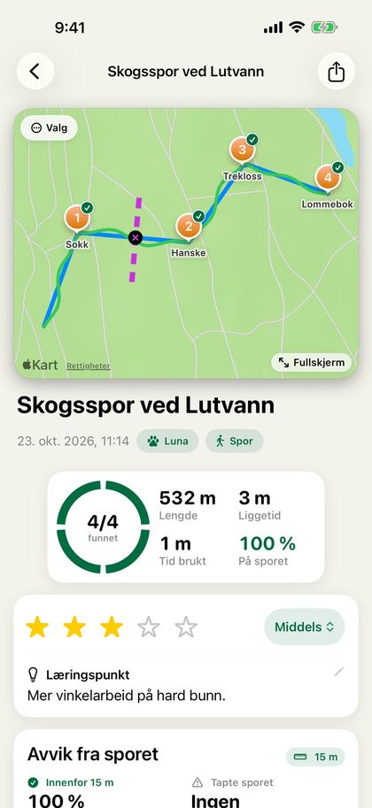
16
Vurdering og vinkler
Gi hvert spor en vurdering, og se hvor mange vinkler IGP-sporet hadde.
Kortet «Vurdering» står i arket «Sporet er ferdig» og under resultatet i sporoversikten. Alt er valgfritt:
- «Karakter»: 1 til 5 stjerner.
- «Vanskelighetsgrad»: «Lett», «Middels» eller «Vanskelig».
- «Læringspunkt»: én linje om hva som gikk bra, eller hva som må jobbes mer med.
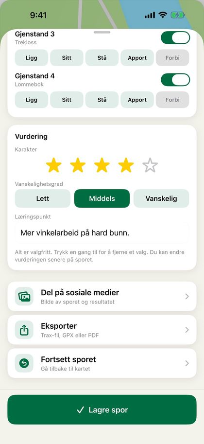
Trykk en gang til på valgt stjerne eller grad for å fjerne valget. I sporoversikten står vanskelighetsgraden som en liten menyknapp på samme linje som stjernene. Trykk på stjernene for å endre karakteren, på menyknappen for å velge grad eller «Ingen», og på læringspunktet for å skrive det.
Utviklingsgrafen for hunden har valget «Karakter», med punktene farget etter vanskelighetsgrad: grønn er lett, oransje middels og rød vanskelig. PDF-en viser karakter og vanskelighetsgrad, og læringspunktet som egen del. Hunderapporten har snittkarakter på forsiden. Vurderingen følger med når du sender sporet som Trax-fil.
Vinkler: I IGP-spor teller Trax vinklene i det lagte sporet av seg selv, der sporet svinger minst 45 grader. Små bukter og GPS-støy telles ikke. «Detaljer» i sporoversikten viser «Vinkler», og kartet har små nummererte sirkler ved hver vinkel. PDF-en har raden «Vinkler i sporet». Andre sportyper får ingen vinkler. Spor under 30 meter får heller ingen vinkler, og på blindt spor er de skjult til sporet stoppes.
17
Treningsmomenter
Velg hva sporet skal trene på, og vurder hvert moment når sporet er gått.
Kortet «Treningsmomenter» står i arket «Lagre spor» etter at sporet er lagt, under liggetiden. Første gang er lista tom. Trykk «Nytt moment», skriv et navn, for eksempel «Spiss vinkel» eller «Gjenstand i bratt bakke», og trykk «Legg til». Momentet velges med en gang og huskes til neste spor. Trykk på et moment for å velge det eller fjerne valget.
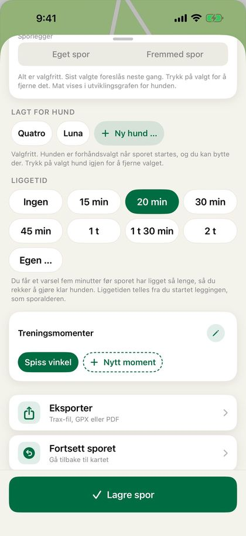
Vil du rydde i lista, trykker du på blyanten øverst til høyre i kortet. Hvert moment får da et rødt kryss som sletter det fra lista. Trykk «Ferdig» når du er ferdig. Spor som allerede har momentet, beholder det.
Når sporet er gått, vurderer du hvert valgt moment som «Bra», «Middels» eller «Dårlig» i arket «Sporet er ferdig», over «Vurdering». Trykk en gang til for å fjerne et valg. Kortet vises bare når sporleggeren valgte momenter.
I sporoversikten kan du velge momenter så lenge sporet venter, og vurdere dem når det er gått. Ble ingen momenter valgt før sporet ble gått, vises ikke kortet. På spor som er sendt blindt, er momentene skjult til sporet er gått.
Når du velger en hund på siden «Fullførte spor», har hundekortet raden «Treningsmomenter» med antall momenter. Trykk på den for å se en stolpe per moment, for eksempel «7 av 9 bra». Raden vises bare når hunden har vurderte momenter.
Momentene står i PDF-en, følger med når du sender sporet som Trax-fil, og er med i sikkerhetskopien. Feltsøk og arealsøk har ikke treningsmomenter.
18
Spill av sporet
Se hvordan hunden arbeidet, over sporet sporleggeren la.
- Åpne et fullført spor, trykk «Valg» øverst til venstre på kartet og velg «Spill av sporet».
- Trykk på avspillingsknappen. En grønn dråpe med oransje pote viser hvor du og hunden var, og ruten tegnes fram etter hvert.
- Dra i tidslinjen for å hoppe fram eller tilbake. Under tidslinjen ser du hvor langt ut i sporet du er, og klokkeslettet.
- Trykk på hastighetsknappen for å spille av 5, 10, 30 eller 60 ganger fortere enn virkelig tid.
Gjenstandene får en grønn hake når de blir funnet. På eldre spor, der tidspunktet for funnet ikke er lagret, blir gjenstanden funnet der hunden var nærmest den.
19
Hundens spor fra GPS-halsbånd
Har hunden GPS-halsbånd, for eksempel fra Garmin eller Tractive? Legg til GPX-fila fra halsbåndet, så ser du hvor hunden gikk i forhold til deg og sporet.
- Eksporter turen som GPX-fil fra halsbåndet eller appen til halsbåndet, og lagre den i Filer eller send den til telefonen med AirDrop.
- Åpne det fullførte sporet og trykk «Legg til hundens spor» i kortet «Hundens spor». Velg GPX-fila.
- Har fila flere hunder, velger du hvem som gikk sporet. Hunden med samme navn som på sporet står øverst.
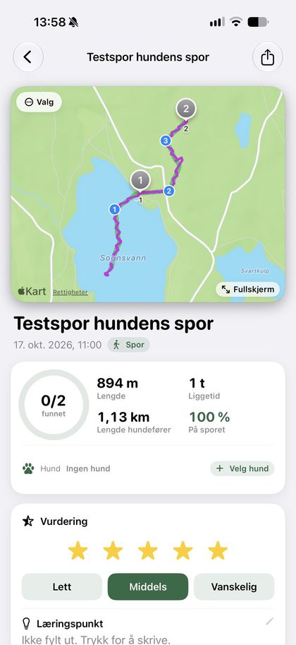
Du kan også åpne GPX-fila rett fra Filer eller AirDrop. Passer tidene i fila med et spor du har gått, spør Trax «Er dette hundens spor?». Trykk «Legg til hundens spor», eller «Importer som nytt spor» hvis fila er et vanlig spor.
Trax bruker bare den delen av fila som er fra da du gikk sporet, med to minutter ekstra i hver ende. Resten av turen tas ikke med. Fila må være fra samme spor: passer ikke tidene, får du beskjed om det.
Har sporet ingen hund, og hunden i fila heter det samme som en av hundene dine i Trax, får sporet den hunden. Da havner det under riktig hund i «Fullførte spor». En hund du allerede har valgt, byttes aldri.
Kortet «Hundens spor» viser lengden på hundens spor og hvor langt hunden var lengst fra deg. Med «Vis på kartet» skjuler eller viser du hundens linje. «Bytt» velger en ny fil, og «Fjern» sletter hundens spor uten å røre resten av sporet.
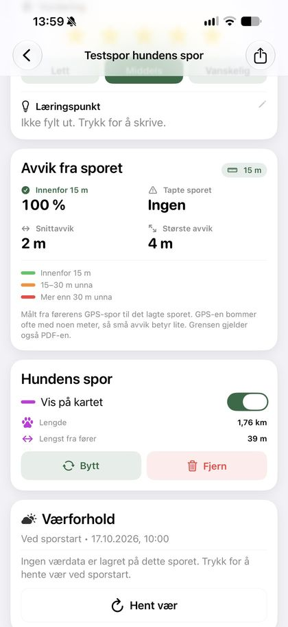
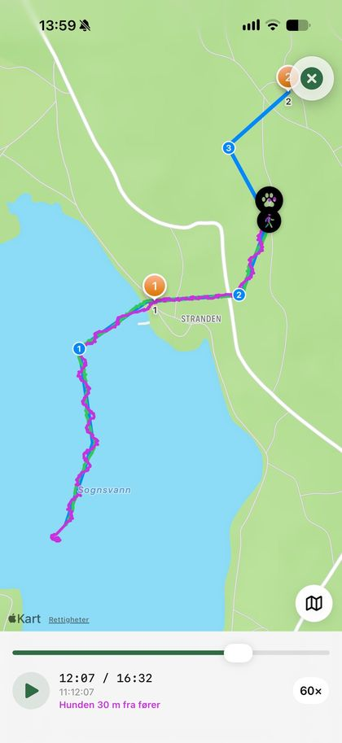
I «Spill av sporet» vises hunden som en oransje dråpe med grønn pote og du som en grønn dråpe med en gående figur, og under tidslinjen står hvor langt hunden var fra deg akkurat da. Hundens spor er også med på kartet i PDF-en og følger med når du sender sporet til en annen Trax-bruker.
Tips: Har fila ikke tider, vises hundens spor på kartet, men ikke i avspillingen.
20
Rediger spor
Kutt bort starten eller slutten av et spor, for eksempel en lang hale fordi du glemte å trykke Stopp.
- Åpne sporet og trykk «Valg» øverst til venstre på kartet, og så «Rediger spor». På et spor som ikke er gått ennå, står «Rediger spor» der direkte.
- Har sporet både sporleggerens og hundeførerens spor, velger du hvilket du vil kutte øverst. Du kan kutte begge før du lagrer.
- Dra håndtakene under kartet: det venstre er ny start, det høyre ny slutt. Det som kuttes bort, blir grått på kartet. Bruk pilene for å flytte ett punkt om gangen.
- Trykk «Lagre». Lengde, varighet og liggetid regnes ut på nytt, og avviket fra sporet følger med.
Ligger det gjenstander eller funn i delen som kuttes, spør appen om de skal flyttes til nærmeste punkt eller fjernes. Et funn som fjernes, regnes som ikke funnet.
Viktig: Kuttet kan ikke angres etter at du har lagret. Punktene som kuttes bort, slettes.
21
Avvik fra sporet
Se hvor godt du og hunden fulgte sporet sporleggeren la.
Kortet «Avvik fra sporet» står under resultatet i sporoversikten for fullførte spor. Det viser:
- Hvor stor del av ruten din som var innenfor grensen for «på sporet».
- «Tapte sporet»: hvor mange ganger føreren var utenfor grensen sammenhengende i minst 20 meter (eller dobbelt grense hvis det er lengre), og hvor langt ut i sporet det skjedde første gang.
- Snittavvik og største avvik.
Grensen velger du med knappen øverst til høyre i kortet: 5, 10, 15, 20 eller 30 meter. Standard er 15 meter. Valget huskes og gjelder også PDF-en og «På sporet» i hundesammendraget. Varselet om sportap mens du går, har sin egen grense under Innstillinger › Varsler.
På kartet, i fullskjerm og i avspillingen er hundeførerens rute fargelagt: grønn innenfor grensen, oransje opptil dobbelt grense og rød lenger unna. Mens du går sporet, brukes fortsatt fargen du har valgt under Innstillinger › Kart og spor.
Tips: Avviket måles fra førerens GPS-spor, ikke hundens. GPS-en bommer ofte med noen meter, så små avvik betyr lite.
22
Vær
Trax henter været på stedet der sporet startet, for tidspunktet du startet: temperatur, vind og vindretning, nedbør og luftfuktighet. Når hunden starter sporet, hentes været på nytt, siden vinden kan ha snudd eller økt i løpet av liggetiden. Værdata lagres sammen med sporet og er med i PDF-eksporten, med kolonnene «Lagt» og «Sporet».
Mens sporet legges og mens hunden sporer, viser en liten pil på kartet, over kartknappene, hvor vinden blåser og styrken i m/s. Pila peker dit vinden blåser, altså dit lukten går, og snur seg med kartet. Trykk på pila for å se for eksempel «Vind fra SV, 4 m/s». Vinden hentes én gang ved start og oppdateres ikke underveis. Pila er også med på kartet i PDF-en og på bildet til sosiale medier.
Mangler et spor værdata, for eksempel fordi du var uten dekning, trykker du «Hent vær» i sporoversikten. Dette krever internett.
Værdata kommer fra Apple Weather. Under værkortet finner du Apple Weather-merket og en lenke til Apples oversikt over andre datakilder.
23
Del på sosiale medier
Vis fram sporet: Trax lager et bilde med sporet, lengden, liggetiden og funnene, gjerne oppå et bilde av deg og hunden.
- Når du har gått et spor, trykker du «Del på sosiale medier» i arket «Lagre spor». Eldre spor deler du fra delingsknappen øverst i sporoversikten.
- Velg utseende med de små forhåndsvisningene øverst. «Spor og tall», «Bare spor», «Liste» og «Bare tall» viser sporet og tallene i hvitt, slik som i Strava. «Kart» viser sporet på kartet med logo og dato øverst og et mørkt panel nederst, og der velger du «Satellitt» eller «Vanlig kart». «Polaroid», «Delt», «Glasskort», «Magasin» og «Merke» er ferdige oppsett med bilde, spor og tall.
- Velg «Story (9:16)» eller «Innlegg (4:5)».
- Trykk «Ta bilde» eller «Velg bilde» for å legge sporet oppå et bilde av deg og hunden. Uten eget bilde blir bakgrunnen grønn. «Fjern bildet» tar det bort igjen.
- Velg farge for «Sporlegger», «Hundefører» og «Gjenstander». Du kan velge mellom 11 farger, og regnbueprikken til slutt i raden åpner fargevelgeren for en egen farge. «Kontrastkant» legger en tynn kant rundt sporene, så de synes på alle bakgrunner.
- Trykk «Del bildet» og velg Instagram, Facebook, Snapchat eller en annen app, eller «Arkiver bilde» for å lagre det i Bilder.
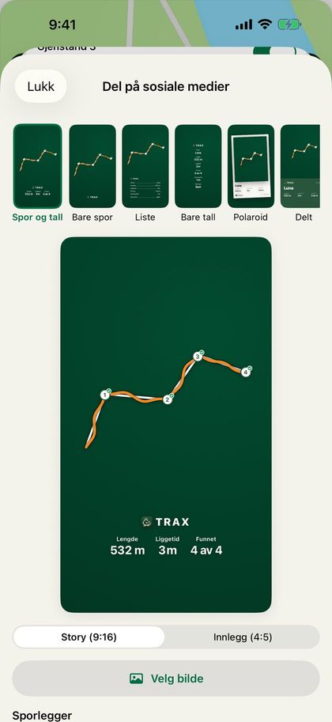
På feltsøk viser bildet feltkanten og gjenstandene uten spor, og «Størrelse» i stedet for «Lengde». Klistremerkene har da ett fargevalg, «Felt». På arealsøk viser bildet også ruten din og hundens spor fra GPS-halsbåndet hvis du har lagt det til, og du velger farge for «Felt», «Hund» og «Hundefører».
Har du brukt et eget bilde, spør Trax «Lagre bildet på sporet?» når du er ferdig. Velger du «Lagre», vises bildet øverst i sporoversikten, og du sveiper mellom bildet og kartet. Trykk på bildet for å se det i fullt format. Under «Bilde» kan du dele bildet på nytt eller fjerne det fra sporet. Bildet er med i sikkerhetskopien.
Tips: I Instagram Story kan du bruke sporet som klistremerke: trykk «Kopier klistremerke», åpne Instagram Story, velg et bilde og lim inn. Klistremerket kan flyttes og gjøres større eller mindre. «Polaroid» og «Delt» kan ikke kopieres som klistremerke.
Viktig: Sporet lagres ikke når du deler. Husk å trykke «Lagre spor» etterpå.
24
Dele og motta spor
Sporlegger og hundefører trenger ikke bruke samme telefon. Sporleggeren sender sporet som en Trax-fil.
- Sporleggeren trykker «Eksporter» › «Til en annen Trax-bruker» når sporet er lagt, eller på delingsknappen øverst i sporoversikten.
- Send filen med AirDrop eller e-post. AirDrop er best, for da åpnes sporet rett i Trax hos mottakeren.
- Fra e-post eller Filer trykker mottakeren på filen. Da vises en forhåndsvisning med kart, lengde, antall gjenstander og underlag. Trykk på delingsknappen og velg Trax.
- Trax viser «Spor mottatt» med lengde og antall gjenstander. Velg «Gå sporet nå» eller «Lagre til senere». «Avbryt» lukker uten å importere.
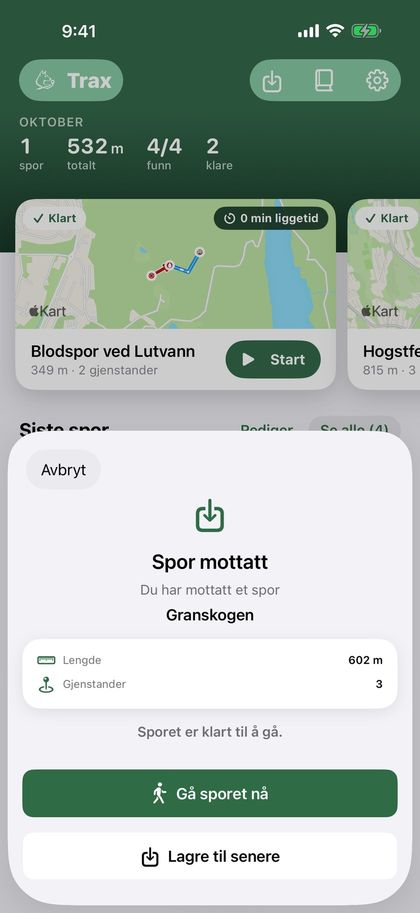
Viktig: Ikke send sporet med Meldinger. Går meldingen som SMS i stedet for iMessage, kommer filen ikke fram, og det er vanskelig å se på forhånd hvilken det blir.
Skal ikke hundeføreren se sporet før det er gått, velger du «Til en annen Trax-bruker, blindt». Det finnes i arket «Lagre spor» og i delingsknappen i sporoversikten før sporet er gått. Mottakeren ser bare startstedet, en grønn dråpe med oransje pote, ikke ruten, gjenstandene eller hvor mange gjenstander det er. Sporoversikten viser kortet «Sporet er sendt blindt», og «Gå blindt» er slått på når sporet startes. Trykk «Vis sporet» hvis du vil se hele sporet likevel.
Tips: Blindt spor skjules i Trax, men filen er ikke kryptert. Eldre versjoner av Trax og andre kartapper kan vise hele sporet.
Filen inneholder sporleggerens rute, gjenstandene med beskrivelse, underlaget, sportypen, kryss-sporene og det som hører til blodspor. Er sporet allerede gått, er hundens rute og vurderingen også med, og mottakeren får bare valget «Lagre». Sporet havner da under «Fullførte spor».
Du kan også trykke «Importer» på hjem-skjermen og velge en fil fra Filer-appen. GPX-filer fra andre apper og GPS-enheter fungerer også. Velg «GPX (andre apper)» når du vil åpne sporet i en annen kartapp.
Åpner du en Trax- eller GPX-fil med et spor som allerede ligger i Trax, spør appen «Sporet er allerede lagret». Velg «Lagre som nytt spor», «Åpne lagret spor» eller «Avbryt».
Har ikke sporleggeren iPhone? Da kan sporet legges i en hvilken som helst GPS-app som lagrer GPX-filer. Sporleggeren lagrer et veipunkt der hver gjenstand legges ut, eksporterer sporet som GPX og sender filen med e-post. Du trykker på filen og velger Trax, på samme måte som med en Trax-fil.
Veipunktene blir gjenstander, med navnet som beskrivelse, og du får varsel når hunden nærmer seg dem. Gjenstander kan ikke legges til i Trax etterpå, så uten veipunkter i filen kommer sporet uten gjenstander. Send ett spor per fil. Har filen to spor, leser Trax det andre som hundens rute.
Sporet får merket «Eksportert» først når delingen er fullført, enten du deler Trax-fil, GPX eller PDF. Avbryter du delingsarket, blir det ikke merket.
Tips: Vil dere ha et felles arkiv i treningsgruppa? Lag en mappe i iCloud Drive i Filer-appen og del den med gruppa. Velg «Arkiver i Filer» når du eksporterer et spor, og legg Trax-filen i den delte mappen. De andre trykker på filen i mappen og åpner den i Trax, på samme måte som fra e-post.
25
PDF-rapport
I sporoversikten kan du trykke på delingsknappen øverst og velge «PDF (flere)» og velge ett eller flere fullførte spor. Du får én PDF med ett spor per side, eldste først, med kart, nøkkeltall, gjenstander, funn, underlag, vurdering og vær, klar til å sende eller skrive ut.
Nøkkeltallene har også sportype, vinkler, «Innenfor X m av sporet» og «Tapte sporet», og hundeførerens rute er fargelagt etter avvik i kartet, med grensen du har valgt i sporoversikten (se «Avvik fra sporet»). Blodspor har også blodmengde, sporsko/klauv og blodstoppene. Hver gjenstand står med koordinat i formatet du har valgt under Innstillinger › Kart og spor, og hvor nøyaktig GPS-en var da gjenstanden ble lagt, for eksempel «±4 m nøyaktighet». Eldre spor har ikke lagret nøyaktigheten, og da står det «nøyaktighet ukjent».
Vil du ha alle sporene til én hund, trykker du på «Se alle» ved «Siste spor» på hjem-skjermen og deretter på dokumentknappen øverst til høyre. Velg hund, slå på «Velg periode» hvis du bare vil ha sporene mellom to datoer, og trykk «Lag PDF» nederst. PDF-en får en forside med oppsummering, snittkarakter og liste over sporene, og deretter én side per spor. Sporene i rapporten får merket «Eksportert».
Tips: PDF-rapporten passer godt som treningsdagbok eller til å vise instruktøren.
26
Hunder
Registrer hundene du trener med, så ser du hvilken hund som gikk hvert spor.
- Gå til Innstillinger › Mine hunder.
- Trykk «Legg til hund» og skriv navnet.
- Trykk «Lagre».
Du kan også legge til en hund der du velger hund: trykk «Ny hund …» sist blant hundeknappene på «Gå spor» eller under «Lagt for hund» i arket «Lagre spor», eller i menyen når du trykker på hundemerket i sporoversikten. Skriv navnet og trykk «Lagre», så legges hunden i hundelista og velges med en gang. Har du ingen hunder ennå, åpner «Registrer hund» det samme navnefeltet.
Når du har registrert hunder, velger du hund når du starter å gå et spor. Sporleggeren kan velge hvem sporet er lagt for (se «Lagre sporet»), og da er den hunden valgt på forhånd. Har du bare én hund, er den valgt på forhånd. Hunden vises i sporoversikten og i PDF-rapporten.
Hunden kan byttes etterpå i sporoversikten. På siden «Fullførte spor» (trykk «Se alle» på hjem-skjermen) kan du vise sporene til én hund om gangen med knappene øverst.
Når du velger én hund, viser kortet fire tall: «Spor», «Funnet», «Siste 30 dager» og «På sporet» (snittet av hvor stor del av hvert spor som var innenfor grensen for avvik). Under står «Utvikling»: en graf over hundens fullførte spor over tid. Velg hva grafen skal vise: «Funnet», «På sporet» eller «Lengde», eller under «Mer»: «Sporalder» (liggetid), «Karakter», «Blod» (blodmengde per 100 meter, når hunden har minst to blodspor med blodmengde) eller «Mat» (maten i IGP-spor, når hunden har minst to IGP-spor med mat valgt). Grafen kommer når hunden har minst to spor. Mangler sporene verdien du har valgt, står det at det er for få spor til å vise en graf.
«Arbeidstid» under «Mer» viser hvor lang tid hunden brukte på IGP-sporene, når hunden har minst to IGP-spor. Er IGP-sporene lagt for forskjellige nivåer, kommer egne knapper for nivå under sportypene, for eksempel «Alle nivåer», «IGP 1» og «IGP 2». Velg ett nivå, så viser kortet, grafen og lista bare spor lagt for det nivået, og du sammenligner likt med likt. Med ett nivå valgt viser «Arbeidstid» en stiplet strek for maks arbeidstid på nivået, og spor over streken får oransje punkt. FH-nivåene har ingen strek.
Velger du «Feltsøk» eller «Arealsøk» under hunden, viser kortet «Antall» i stedet for «Spor», og ikke «På sporet». Grafen for søk kommer når hunden har minst to søk. Søk telles aldri med i statistikken for spor.
Mål: Når du velger én hund på «Fullførte spor», har hundekortet raden «Mål». Trykk på den for å se målene med fremdriftslinjer, og «Legg til mål» for å lage et nytt. Du kan også legge inn mål før hunden har gått spor: under Innstillinger › Mine hunder trykker du på «…» ved hunden og velger «Mål». Har hunden ingen spor ennå, viser «Fullførte spor» et kort med bare målene.
- «Navn»: for eksempel AK-prøve eller Sesong 2027.
- «Frist»: «Dato» (spor fra i dag og fram til datoen teller, for eksempel fram mot en prøve) eller «Periode» (spor mellom to datoer teller, for eksempel en sesong).
- «Sportype»: «Alle spor», eller bare menneskespor, IGP-spor eller blodspor.
- «Krav»: ett eller flere av «Lengde», «Liggetid», «Antall spor», «Funnet» og «På sporet». Søk teller aldri.
Som standard kan hvert krav nås på et eget spor: lengde og liggetid er det beste sporet i perioden, og «På sporet» er snittet av alle sporene. Har målet minst to av lengde, liggetid, funnet og på sporet, kan du slå på «Alle krav på samme spor». Da er målet nådd først når ett spor oppfyller alle kravene samtidig, og målet viser «Nærmest: sporet …» eller «Nådd på sporet …». «Antall spor» teller alltid alle spor i perioden.
Tips: Eksempel: målet er 1000 m, 2 timer liggetid og 90 % på sporet. Uten «Alle krav på samme spor» er målet nådd når hunden har gått ett spor på 1000 m, et annet med 2 timer liggetid, og har 90 % på sporet i snitt. Med bryteren på må det være ett og samme spor som er 1000 m, har ligget i 2 timer og der dere var 90 % på sporet.
Trykk på et mål for å endre eller slette det. Målene er med i sikkerhetskopien.
Sletter du en hund, beholder sporene hundenavnet. Hunden vises under Innstillinger › Mine hunder › «Tidligere hunder» så lenge den har spor, og der kan du slå av bryteren for å skjule den fra hundefilteret. Sporene ligger fortsatt under «Alle».
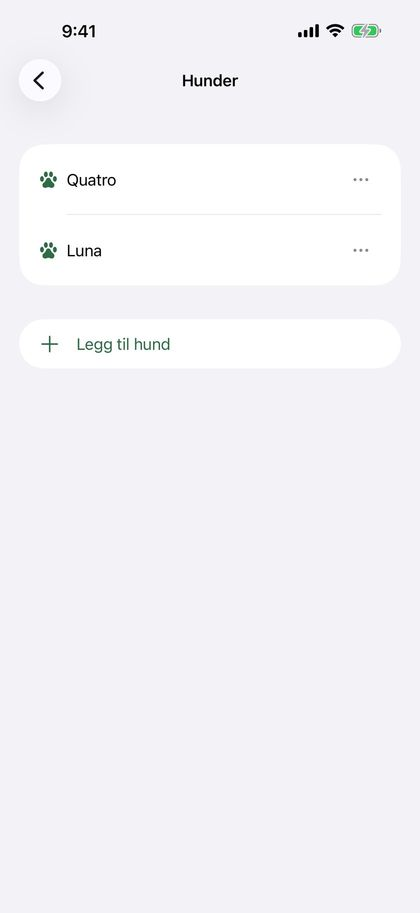
27
Innstillinger
Øverst i Innstillinger står «Mine hunder», og under den én rad for hver side: Varsler, Kart og spor, Batteri, Sikkerhetskopi, Språk og Om Trax. Trykk på en rad for å åpne siden.
- Varsler: varsel om gjenstand i nærheten, blodstopp og blod igjen, sportap og kryssende spor, IGP-krav og veiledning fra IGP-malen mens sporet legges, opplesing av lengde gått, og varseltype med talevarsler. Se «Varsler og talevarsler».
- Kart og spor: velg farge og ikon for gjenstandsmarkørene (tall, kartnål, flagg, potespor eller pose), «Sporleggerens farge» og «Hundeførerens farge». «Snu kartet etter retningen min» lar kartet snu seg etter retningen du står mens du legger eller går spor; når det er av, er nord alltid opp. Her velger du også koordinatformat: desimalgrader (DD), UTM, grader/minutter/sekunder (DMS) eller MGRS. Under «Funn» slår du på «Registrer funn automatisk» og velger avstanden (se «Registrere funn»). Under «IGP-spor» velger du «Skrittlengde» (se «Sportype og blodspor»).
- Batteri: «Sparemodus for GPS» bruker mindre strøm på lange spor. Sporet blir litt grovere, men nærhetsvarselet og «Funnet» virker som før. Under opptak vises batterinivået øverst, og appen varsler ved 20 og 10 prosent, også med låst skjerm.
- Sikkerhetskopi: automatisk kopi til iCloud Drive, og sikkerhetskopi du lager selv. Se «Sikkerhetskopi og ny telefon».
- Mine hunder: legg til, endre navn på eller slett hunder, og legg inn mål for hver hund (trykk på «…» ved hunden). Under «Tidligere hunder» kan du skjule slettede hunder fra hundefilteret.
- Språk: velg «Telefonens språk», Norsk, English, Svenska eller Deutsch. Det nye språket vises neste gang Trax startes, så lukk appen helt og åpne den igjen. Widgeten følger alltid telefonens språk.
- Om Trax: «Send tilbakemelding» åpner en e-post til meg med appversjon, iOS-versjon og telefonmodell ferdig utfylt. Skriv spørsmålet, feilen eller ønsket ditt øverst. «Skriv anmeldelse» åpner Trax i App Store, der du kan gi stjerner og skrive en anmeldelse. «Personvernerklæring» åpner personvernerklæringen på nettsiden til Trax.
Tips: Trykk på «?» ved en seksjon for å se en forklaring av innstillingene der. Trykk igjen for å skjule den.
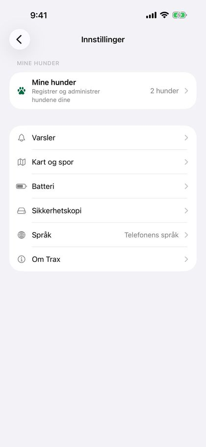
28
Sikkerhetskopi og ny telefon
Ta vare på sporene dine hvis du mister telefonen eller bytter til en ny.
«Automatisk kopi til iCloud Drive» under Innstillinger › Sikkerhetskopi er på som standard. Trax legger da en sikkerhetskopi i mappen «Trax» i din egen iCloud Drive noen sekunder etter at et spor eller en hund er lagret eller endret, så du slipper å huske det selv. Mens et spor pågår, venter Trax til sporet er lagret. Under bryteren står det når siste kopi ble lagt der, eller at iCloud Drive er av på telefonen.
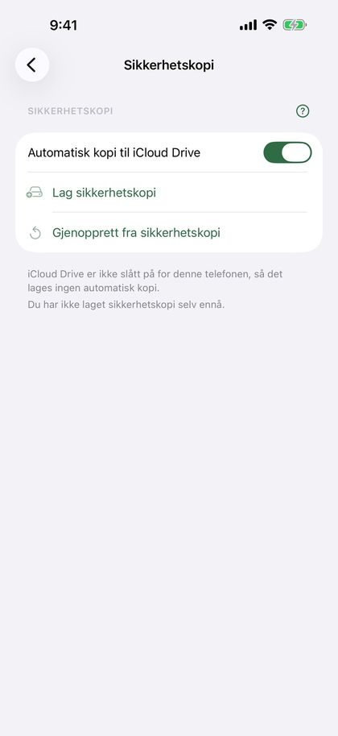
Du kan også lage en sikkerhetskopi selv med «Lag sikkerhetskopi». Du får én fil (.traxbackup) med alle spor og hunder, som du kan lagre i Filer eller iCloud Drive, eller sende til deg selv. Under knappene står det når du sist laget en.
- Ny telefon, eller Trax installert på nytt: Trax spør én gang om sporene skal hentes fra iCloud Drive. Velg «Gjenopprett».
- Har du en sikkerhetskopi du laget selv, trykker du på filen (den åpnes i Trax), eller velger «Gjenopprett fra sikkerhetskopi» under Innstillinger › Sikkerhetskopi.
- Trax viser hvor mange spor og hunder kopien har, og spør før noe legges inn.
Gjenoppretting legger bare til spor og hunder som mangler. Ingenting slettes eller overskrives. En hund med samme navn som en hund på telefonen blir samme hund. Alt skjer på telefonen og i din egen iCloud Drive, uten konto.
29
Slette og gjenopprette spor
Sveip et spor mot venstre på hjem-skjermen eller på siden «Fullførte spor» for å slette det. Du kan også åpne et spor og trykke «Slett spor» nederst på siden. Du blir alltid spurt før noe slettes.
Viktig: Slettede spor kan ikke hentes tilbake, med mindre de finnes i en sikkerhetskopi. Eksporter sporet som GPX eller PDF først hvis du vil ta vare på det.
Stopper appen midt i en sporlegging, for eksempel fordi telefonen gikk tom for strøm, er sporet lagret underveis. Neste gang du åpner Trax, vises «Uferdig sporlegging» øverst. Velg «Fortsett» for å legge videre, «Avslutt» for å lagre sporet slik det er, eller «Slett».
Stopper appen midt i et spor, står sporet under «Klare spor» med «Spor pågår». Åpne det og trykk «Fortsett» for å fortsette fra pause. Vil du heller begynne på nytt, trykker du på tilbakepila og «Forkast hundespor».
30
Tips og feilsøking
- Sporet blir hakkete eller får hull: sjekk at Trax har stedstilgang og at «Presis posisjon» er på.
- GPS er mindre presis i tett skog, i bratte daler og mellom høye bygninger. Vent gjerne til posisjonen har stabilisert seg før du trykker «Start».
- Strømsparingsmodus kan gi færre GPS-punkter. Lad telefonen før lange spor, eller slå på «Sparemodus for GPS» under Innstillinger › Batteri.
- Ser du ikke sporet på låseskjermen? Sjekk at Live Activities er slått på under Innstillinger › Trax på iPhonen.
- Kommer ikke varselet om at liggetiden er ute? Sjekk at varsler er på for Trax under Innstillinger › Trax › Varslinger på iPhonen, og slå på «Tidssensitive varslinger» hvis du bruker Fokus.
- Hører du ikke talevarslene? Sjekk at «Varsler» og «Les opp varsler» er på under Innstillinger › Varsler › Varseltype, og at volumet er skrudd opp. Trykk «Hør eksempel» for å teste.
- Mottar du ikke sporet? Send det med AirDrop eller e-post, ikke Meldinger. Sjekk at filen slutter på .trax eller .gpx, og prøv «Importer» på hjem-skjermen.
- Spørsmål eller feil? Trykk «Send tilbakemelding» under Innstillinger › Om Trax, eller send en e-post til post@trax-dogtracking.no.
31
Personvern
Alle spor lagres på telefonen din. Trax har ingen konto og ingen egen server. Har du iCloud Drive, legger Trax en sikkerhetskopi i mappen «Trax» i din egen iCloud Drive. Det kan slås av under Innstillinger › Sikkerhetskopi. Sporene dine deles bare når du selv eksporterer dem.
Bildet til sosiale medier lages på telefonen. Velger du «Arkiver bilde», spør iOS om Trax kan legge til bilder i Bilder. Trax kan bare legge til bilder, ikke se bildene dine. Velger du et eget bilde å legge sporet over, får Trax bare se det ene bildet du velger.
For å hente vær sendes posisjonen og tidspunktet der sporet startet, og der hunden startet sporet, til Apple Weather. Apple knytter ikke forespørselen til deg eller Apple-kontoen din, og ingen treningsdata sendes med.
Hele personvernerklæringen finner du under Innstillinger › Om Trax › Personvernerklæring.